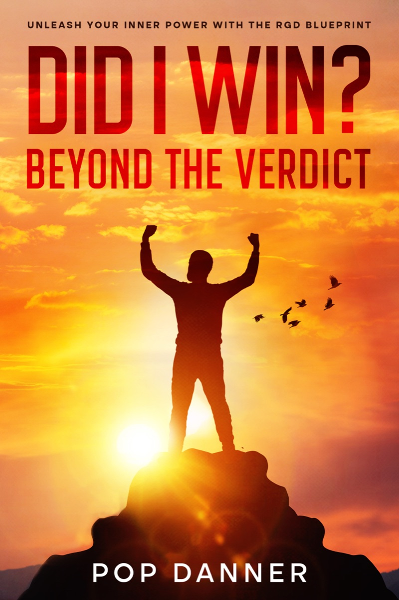

The Book
Did I Win?
Beyond the Verdict
Releasing Your Inner Power Through the RGD Blueprint
“Your circumstances aren't your final verdict — your mindset is.”
What do you do when life hands you a verdict that feels final? When the doors close, the obstacles stack up, and you feel completely stuck?
In Did I Win? Beyond the Verdict, author Alfonse Danner delivers a powerful, battle-tested roadmap for anyone facing life's toughest moments. Drawing from his journey of overcoming a lifetime prison sentence, enduring deep personal loss, and building a thriving life from scratch in just three years, Alfonse introduces the RGD Blueprint: Resilience, Growth Mindset, and Discipline.
This is not just a memoir — it is an actionable blueprint for mental freedom. Did I Win? shows you how to stop accepting limiting verdicts, shatter self-imposed ceilings, and unleash the raw inner power needed to forge forward and own your story.
What's Inside
What You'll
Walk Away With
Four shifts that do the heavy lifting — in your career, your goals, and your head.
- The RGD Framework How to master Resilience, Growth Mindset, and Discipline in your everyday life, career, and personal goals.
- Releasing Inner Power Practical strategies to break through fear, self-doubt, and the feeling of being stuck.
- Rising Above Verdicts How to shift your perspective so external setbacks never dictate your internal worth or future potential.
- Building Lasting Momentum Simple, daily discipline shifts that turn pain into purpose and progress into victory.
Watch
See It in
Sixty Seconds
The trailer for Did I Win? Beyond the Verdict — what it feels like when the verdict lands, and what happens when you refuse to accept it as final.
From the Book
Lines That Stick
Pain is inevitable, but suffering is an option.
Did I Win? Beyond the Verdict
Adversity doesn't build character — it reveals it. The fire will either melt you or forge you into iron.
Did I Win? Beyond the Verdict
A verdict is just words on paper. Your response is the real judgment.
Did I Win? Beyond the Verdict
Available Now
Stop Accepting
Limiting Verdicts
Get the blueprint that took Alfonse from a life sentence to a life he built on purpose.